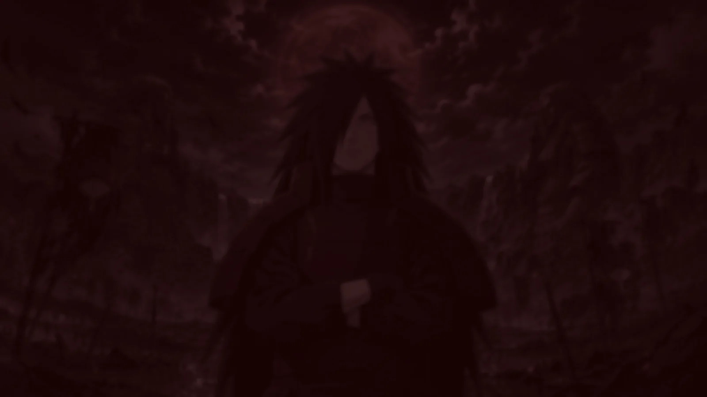
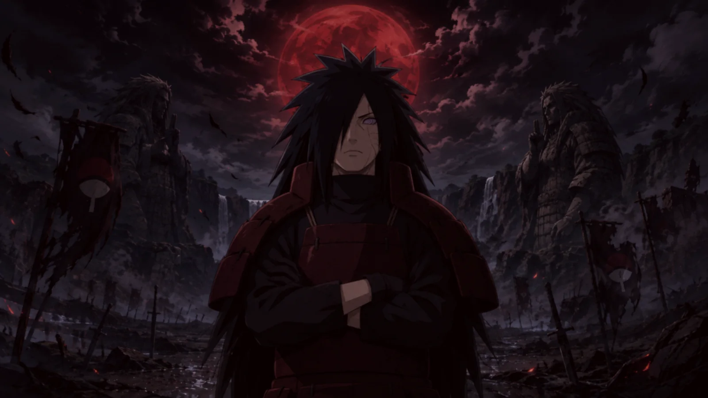
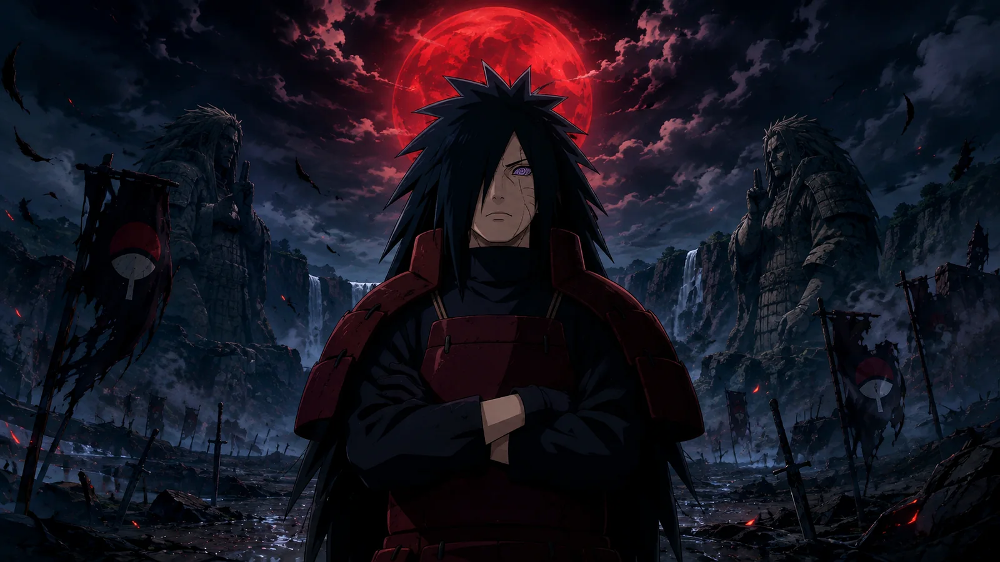
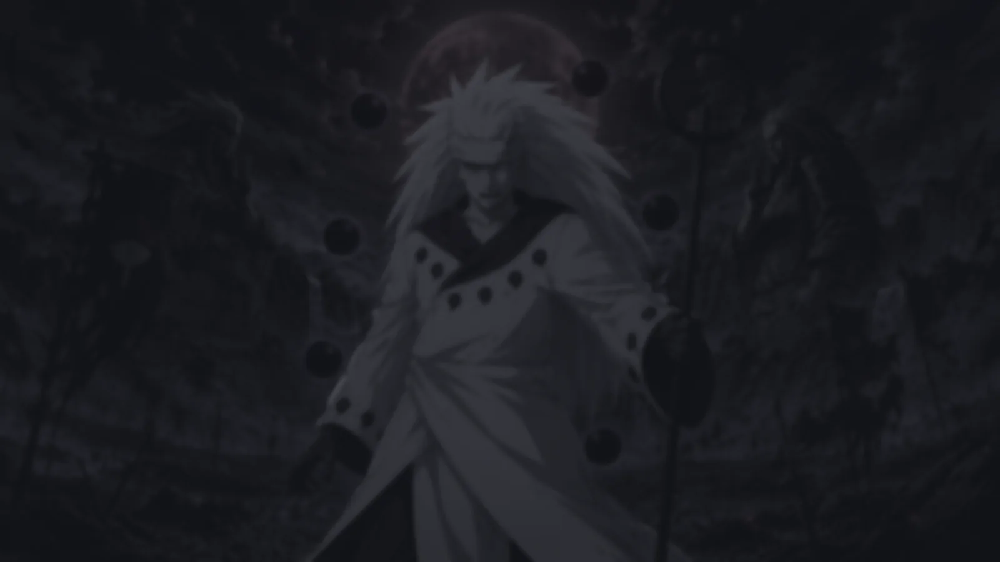
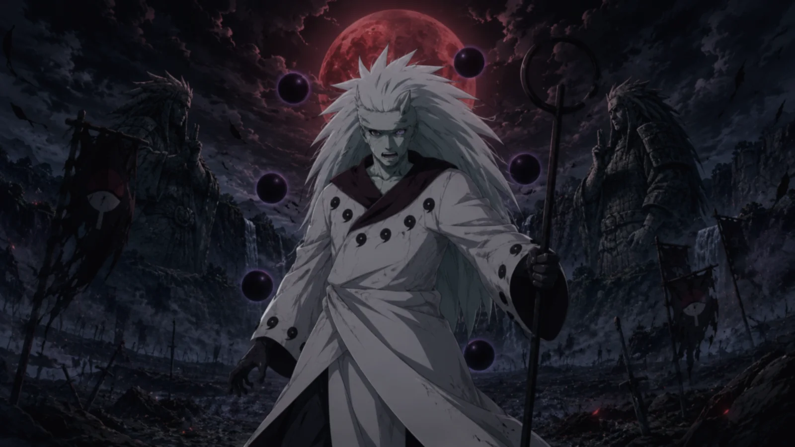
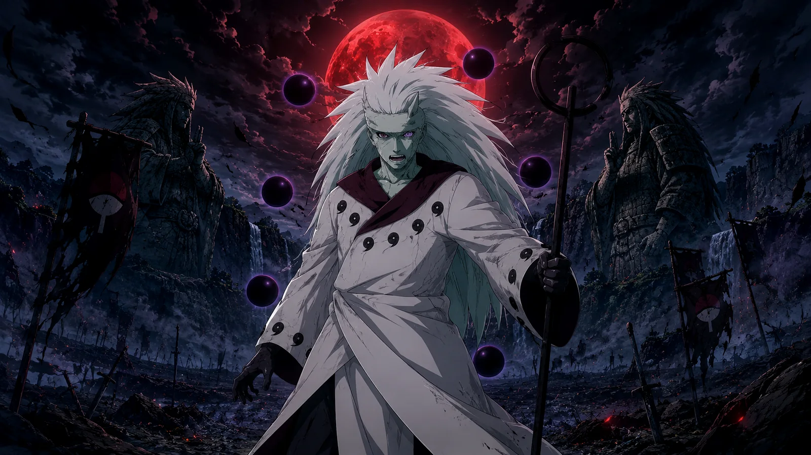
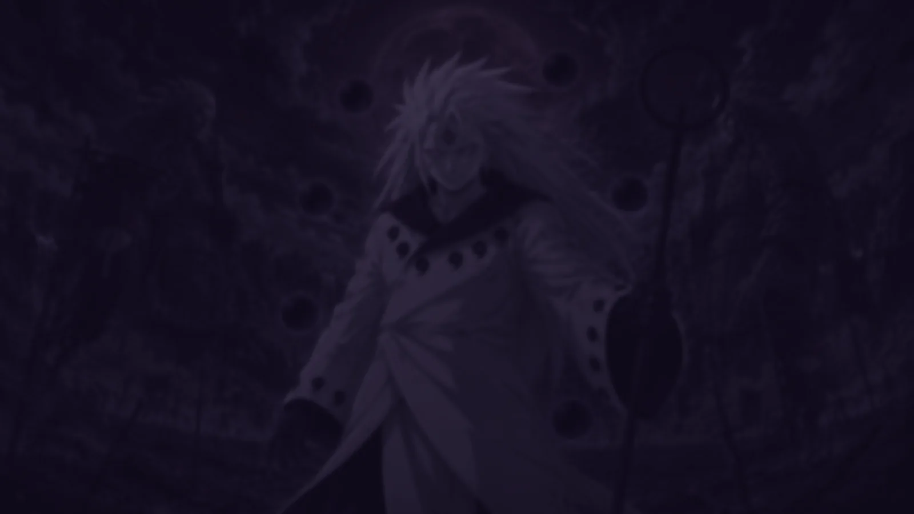
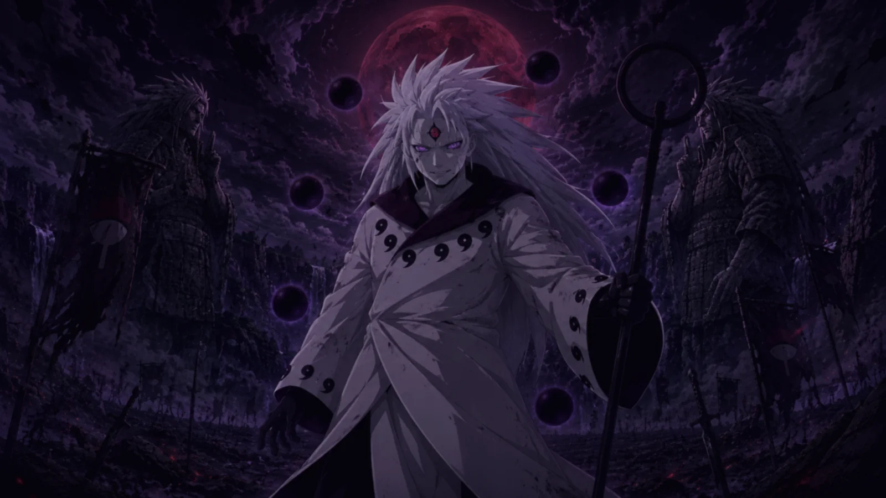
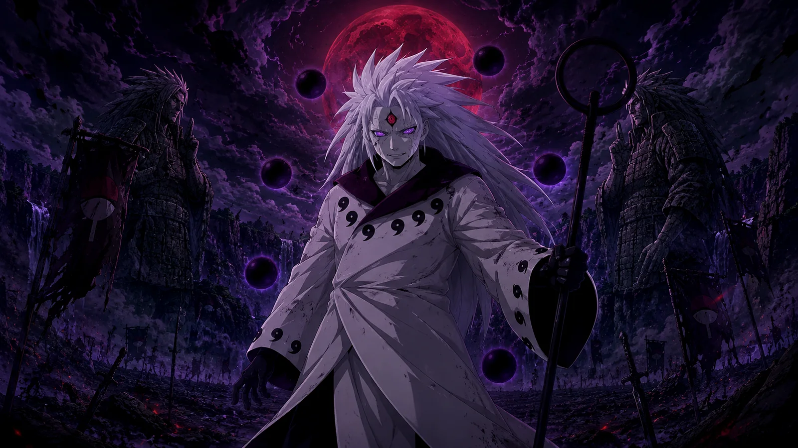

壱
The seal breaks
Chakra finds the shape of a man who was never supposed to hold it again. The ground answers first.
0% — awakening the sequence
うちはマダラ · 伝説の忍
He founded the Hidden Leaf, walked out of it, died, and came back unimpressed. This is the man who never accepted the ending — and the three bodies he wore to rewrite it.
Move your cursor — he follows
壱
Chakra finds the shape of a man who was never supposed to hold it again. The ground answers first.
弐
Hands lock into a seal older than the villages. Every strand of hair lifts against gravity’s opinion.
参
Purple rings bloom across a black field. Whatever stood between him and the moon is now a formality.









01/ 03
Dragged out of the pure land in a body that cannot tire, cannot bleed out, and cannot be talked down. The Eternal Mangekyo is already spinning before his feet touch soil.
FORMING